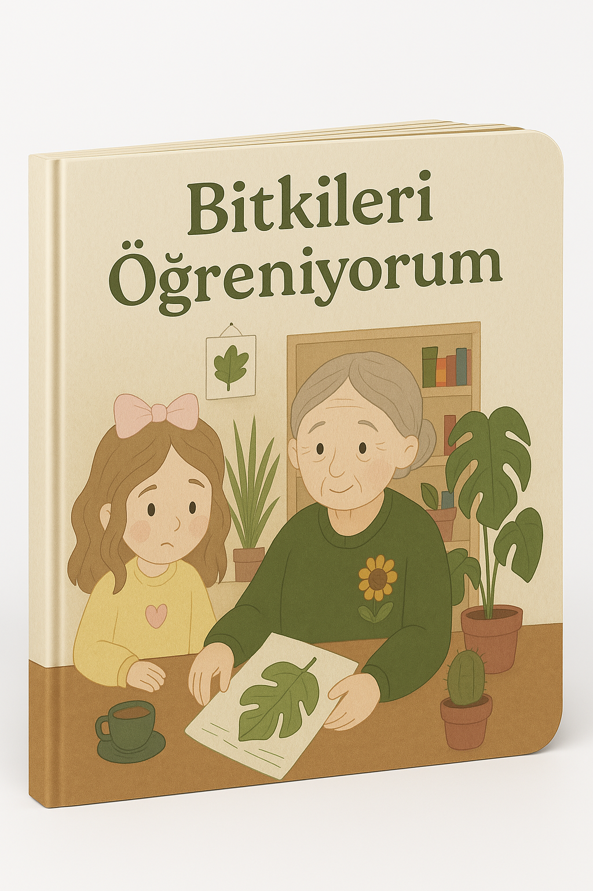

Anneannemin Saklı Bitkileri
Yazar: Deren Sağlam
Bu kitapta anneannemin bana anlattığı bitkileri içermektedir.
- Dil: Türkçe
- Basım Tarihi: Nisan 2025
- Sayfa Sayısı: 20
- Boyut: 25 x 25
Yazar: Deren Sağlam
Bu kitapta anneannemin bana anlattığı bitkileri içermektedir.
DenemeDenemeDenemeDenemeDenemeDenemeDenemeDenemeDenemeDeneme
Kitaptan Alıntı
Bir gün Defne, bahçede mercanköşk toplamakta olan anneannesine yaklaştı. (çizim olacak kısım) “Anneanne, neden bu kadar çok mercanköşk yetiştiriyorsun? Sanki her yemekte kullanıyorsun” diye sordu. Anneannesi gülümseyerek yanıt verdi, "Ah, mercanköşk... Bu bitki sadece bir baharat değil, aynı zamanda bir dosttur. Biliyor musun Defneciğim, gençliğimde zor zamanlar geçirdim. Bir gün komşu bana bir demet mercanköşk getirdi ve dedi ki 'Bu bitki huzuru temsil eder, ne zaman üzgün olursan bir dal kopar, çay yap ya da kokusunu içine çek. 'O günden sonra mercanköşk benim sadık dostum oldu’ dedi. Defne dikkatle dinlerken, “Peki işe yaradı mı anneanne?” diye sordu. Anneannesi derin bir nefes aldı, elindeki mercanköşkü kokladı ve ‘Her seferinde... ne zaman huzurlu hissetmek istesem bir mercanköşk çayı yapar, pencerenin önüne otururdum. Gözlerimi kapatır, baharın güzel günlerini hayal ederdim. ’